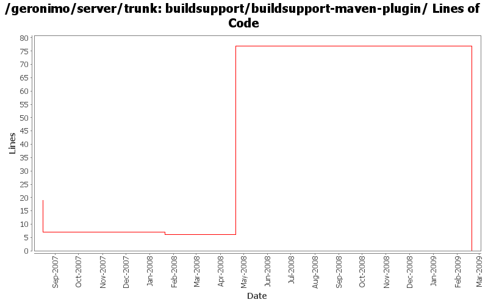

[root]/buildsupport/buildsupport-maven-plugin
 src
(0 files, 0 lines)
src
(0 files, 0 lines)
 main
(0 files, 0 lines)
main
(0 files, 0 lines)
 groovy
(0 files, 0 lines)
groovy
(0 files, 0 lines)
 org
(0 files, 0 lines)
org
(0 files, 0 lines)
 apache
(0 files, 0 lines)
apache
(0 files, 0 lines)
 geronimo
(0 files, 0 lines)
geronimo
(0 files, 0 lines)
 buildsupport
(0 files, 0 lines)
buildsupport
(0 files, 0 lines)

| Author | Changes | Lines of Code | Lines per Change |
|---|---|---|---|
| Totals | 12 (100.0%) | 80 (100.0%) | 6.6 |
| jdillon | 6 (50.0%) | 79 (98.8%) | 13.1 |
| kevan | 3 (25.0%) | 1 (1.3%) | 0.3 |
| djencks | 3 (25.0%) | 0 (0.0%) | 0.0 |
GERONIMO-4538 Move stuff around so framework is self contained and builds the framework server. No groupId changes in this revision in case people dont like this change
0 lines of code changed in 3 files:
(GERONIMO-3961) Upgrade to GMaven for Maven+Groovy integration, which uses Groovy 1.5.4
77 lines of code changed in 1 file:
Update LICENSE and NOTICE files. Merge from 2.1 branch
0 lines of code changed in 2 files:
upgrade trunk to 2.2-SNAPSHOT
1 lines of code changed in 1 file:
(GERONIMO-3747) Fixed parentage of module groups, though most still need to have their modules put into the proper groupId
Updated groupId of *everything* under framework/** to org.apache.geronimo.framework, and did my best to update all references
1 lines of code changed in 1 file:
(GERONIMO-3771) Moved maven-plugins/* to buildsupport/*, updated groupId to org.apache.geronimo.buildsupport
0 lines of code changed in 1 file:
(GERONIMO-3418) Hook up the new buildsupport-maven-plugin, drop the old groovy-build-library
1 lines of code changed in 1 file:
Convert to a real mvn plugin using the sexy groovy integration
0 lines of code changed in 2 files: